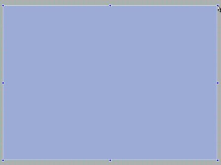

Torque 2D – Shooter Tutorial – Part 2
2. Setting up the Level
First, to set up our level, we should make sure that the game world is big enough. To do this, simply click and hold on the picture of your player's ship and drag it into the scene view. The blue outline in the scene view is the camera view – basically the view that the player will have of the game world at any one time. When you create game levels in T2D, you can create a level that is much larger than this camera view. However, only what is inside this camera view will be shown at any time. You should notice once you place your ship inside the camera view, that it takes up a good deal of space in the view. Since this is a side-scrolling shooter, the player should have a good view of what's ahead of them so they can prepare appropriately. As it stands, the camera view is much too small for that to happen (as shown in Figure 2.1.1).
Note: You can right click and drag to move your workspace around, you can also zoom in via a mouse scroll or click on the View drop down menu and choose a zoom option.
The camera view is too small
Figure 2.1.1
Thankfully, the T2D Level Builder has an awesome tool that will allow us to easily resize the
camera view to fit our needs! First, click on the Camera Tool (as shown in Figure 2.1.2):
Figure 2.1.2
Once you have clicked on the camera tool, your view should zoom out and you should see your camera view with resize handles on it (the blue boxes around the outside perimeter of the square). We want to keep the same aspect ratio as default – so we will choose the resize handle on the top-right corner of the camera view and stretch it out while holding CTRL on the keyboard – this should keep the view the same shape as it was originally (as shown in Figure 2.1.3 and Figure 2.1.4).
|
|
|
|
Once you have resized the camera view to a size you are satisfied with, click the Selection Tool next to the Camera Tool to save your changes (as shown in Figure 2.1.5). Alternately, you could hit the enter key.
Figure 2.1.5
Now that we have our camera view the size that we want, it is time to get our background set up. Using the same click, hold and drag method we used to get our player ship into the level, bring your sky into the level as well. As soon as you drop the sky into the level, you will notice that it is definitely not large enough to cover our camera view (as shown in Figure 2.2.1). To solve this, simply grab your resize handles and drag them out until your sky is a little larger than your camera view. The size really doesn't matter for your sky, just as long as it completely takes up the camera view and then some (as shown in Figure 2.2.2).
|
|
|
 |
As you are dragging out your sky, you will notice something undesirable happening – it is covering up your ship! This is because your sky and your player are both on the same layer. T2D uses a layer system to determine which items in a game are going to be viewed in front of others and which items are going to be viewed behind others. T2D has 32 layers to choose from – the smaller the layer number, the more in front the object is. All objects when they are initially brought onto the level default at layer 0 – the front-most layer. So, to get the sky to appear behind the player's ship, we must change the layer the sky is on. Change the background's layer to "30".
|
|
|
*Note I think it is important to note how much time is saved by using the Level Builder as a main means of building a game. For example, you will notice all of the options in the Scene Object rollout alone. Before GarageGames released the T2D Level Builder, programmers had to hand code all of these variables in .cs files and compile them before running their games. As you can see, with the Level Builder, the workflow has become much more streamlined and simplified – most of the work is done by the Level Builder itself. This takes much of the repetitive workload off of the programmers' shoulders and gives them the flexibility to create a much more polished product as a result. |
Once you have your sky on the appropriate layer, you should be able to see your ship again (as shown in Figure 2.2.6).
Figure
2.2.6